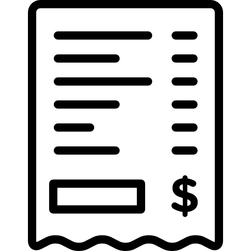

Arun Kumar Rajasekar
Programmer/Developer
Welcome to my Profile
Read more about me
Featured Projects
View my few projects below. More information at Github
BillTracker
New way to split the bill based on each person share on each item rather than entire bill
View ProjectWork Experience
Project Engineer
Wipro Technologies
SEP 2017 - JAN 2019
- Modified legacy system to encrypt the confidential files in the server and decrypt those files only to the authorized user
- Reinforced the security of legacy code to meet the latest security standards
- Helped the Support team on resolving the bugs and technical problems
- Coordinated along with the Onsite team to test and deploy the new features to the production server
Education
University of Adelaide
Master of Computer Science
Cumulative GPA: 5.25/7.00